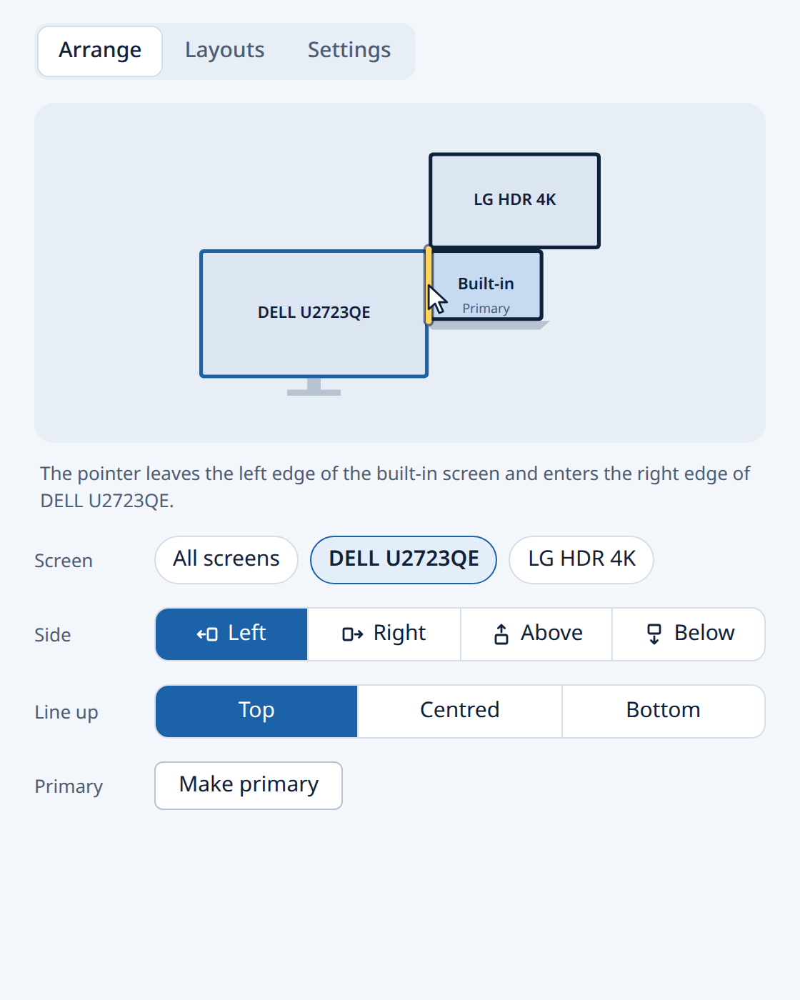

Your monitor is on the left. Now the pointer knows it.
Screen Side tells your computer which side of the laptop your external screen stands on, so the pointer leaves through the edge that faces it. Pick a side with one click, from the tray, with a hotkey or from the command line. At each desk, the layout you saved comes back when you plug in.
Windows 10 and 11, macOS 12 and newer, and Linux (GNOME, KDE Plasma, Sway, Hyprland, X11). Free and open source, MIT licence.
The pointer leaves the left edge of the laptop and enters the right edge of the monitor.
Install
Download ScreenSide_x64-setup.exe and run it. It installs for your account only, with no admin prompt. The installer is not code-signed, so SmartScreen asks once: choose More info, then Run anyway. An MSI of the same build is there for managed machines.
Download ScreenSide_universal.dmg (Apple silicon and Intel) and drag Screen Side to Applications. The app is not notarised, so the first time macOS refuses to open it: go to System Settings, Privacy and Security, and choose Open Anyway.
Debian and Ubuntu:
sudo apt install ./screen-side_amd64.deb
Fedora and openSUSE take the
.rpm,
and anything else the
AppImage
(chmod +x it and run it). Download the
.deb
first for the command above. Sway, Hyprland and other wlroots desktops also need wlr-randr.
The screen-side command, without the app. macOS and Linux:
curl -LsSf https://danieltyukov.github.io/screen-side-switcher/install.sh | shWindows, in PowerShell:
powershell -ExecutionPolicy ByPass -c "irm https://danieltyukov.github.io/screen-side-switcher/install.ps1 | iex"
Or with Rust: cargo install --git https://github.com/danieltyukov/screen-side-switcher screen-side.
You can read install.sh and install.ps1 first.
What it does
- Several screens
- Pick which monitor moves, or move them all. Two on the left line up outward in order.
- A layout per desk
- Save the arrangement at each desk. Mark it Auto and it comes back when that monitor is plugged in.
- Tray and hotkey
- Swap sides from the tray or with a keyboard shortcut, without opening a window.
- Command line
screen-side left,toggle,apply office, with JSON output for scripts.- Alignment and primary
- Line screens up at the top, centre or bottom, and choose which one is primary.

Works on
| Desktop | How Screen Side talks to it | Tested so far |
|---|---|---|
| GNOME (Wayland and X11), Pantheon, Budgie | Mutter display configuration over D-Bus | Reading and checking on GNOME 46 |
| KDE Plasma 5 and 6 | kscreen-doctor | Against its documented output; reports welcome |
| Sway, Hyprland, niri, river, labwc | wlr-randr | Against its documented output; reports welcome |
| Xfce, MATE, i3 and other X11 | xrandr | Against its documented output; reports welcome |
| Windows 10 and 11 | Display configuration API | Reading in CI; reports welcome |
| macOS 12 and newer | Quartz Display Services | Reading in CI; reports welcome |
If your desktop is missing or misbehaves, tell us what it reports. Adding a desktop is one file; BACKENDS.md shows how.
From the command line
screen-side show the screens and where they are
screen-side left put the external screen on the left
screen-side toggle swap left and right (for a keyboard shortcut)
screen-side left --screen dell move one screen of several
screen-side align end line up the bottom edges
screen-side save office --auto remember this desk
screen-side watch put saved layouts back as screens connect
screen-side doctor what to paste into a bug reportHelp make it better
- Report a problem, with the output of
screen-side doctor. - Suggest an idea or ask a question in Discussions.
- Add support for your desktop.
- Package it for Homebrew, winget, the AUR or Flathub. CONTRIBUTING.md has the details.